위험물산업기사 (2010-03-07 기출문제)
1과목: 일반화학
1. 고체상의 물질이 액체상과 평형에 있을 때의 온도와 액체의 증기압과 외부압력이 같게 되는 온도를 각각 옳게 표시한 것은?(오류 신고가 접수된 문제입니다. 반드시 정답과 해설을 확인하시기 바랍니다.)
- 끓는점과 어는점
- 전이점과 끓는점
- 어는점과 끓는점
- 용융점과 어는점
(정답률: 63%)

2. 다음 화합물 중 수용액에서 산성의 세기가 가장 큰 것은?
- HF
- HCl
- HBr
- HI
(정답률: 72%)
3. 물을 전기분해하여 표준상태 기준으로 산소 22.4L를 얻는데 소요되는 전기량은 몇 F 인가?
- 1
- 2
- 4
- 8
(정답률: 49%)
4. 물 2.5L 중에 어떤 불순물이 10mg 함유되어 있다면 약 몇 ppm 으로 나타낼수 있는가?
- 0.4
- 1
- 4
- 40
(정답률: 75%)
5. 반투막을 이용해서 콜로이즈 입자를 전해질이나 작은 분자로부터 분리 정제하는 것을 무엇이라 하는가?
- 틴들
- 브라운 운동
- 투석
- 전기 영동
(정답률: 82%)
6. 다음 물질 중 수용액에서 약한 산성을 나타내며 염화제이철 수용액과 정색반응을 하는 것은?
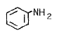
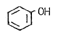
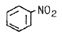
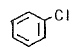
(정답률: 75%)
7. 다음 금속들 중에서 황산아연 수용액 속에 넣어 아연을 분리시킬 수 있는 것은?
- 철
- 칼슘
- 니켈
- 구리
(정답률: 58%)
8. 다음 작용기 중에서 메틸(methyl)기에 해당하는 것은?
- -C2H5
- -COCH3
- -NH2
- -CH3
(정답률: 77%)
9. 0.0016N에 해당하는 염기의 pH 값은?
- 2.8
- 3.2
- 10.28
- 11.2
(정답률: 50%)
10. t℃에서 수소와 요오드가 다음과 같이 반응하고 있을 때에 대한 설명 중 틀린 것은? (단, 정반응만 일어나고, 정반응속도식 V1=K1[H2][I2]이다.)
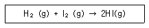
- K1 은 정반응의 속도상수 이다.
- [ ]는 물농도(mol/L)를 나타낸다.
- [H2]와 [I2]는 시간이 흐름에 따라 감소한다.
- 온도가 일정하면 시간이 흘러도 V1은 변하지 않는다.
(정답률: 68%)
11. Li 과 F를 비교 설명한 것 중 틀린 것은?
- Li은 F보다 전기전동성이 좋다.
- F는 Li 보다 높은 1차 이온화에너지를 갖는다.
- Li의 원자반지름은 F보다 작다.
- Li 는 F 보다 작은 전자친화도를 갖는다.
(정답률: 66%)
12. 다음 물질 중 이온결합을 하고 있는 것은?
- 얼음
- 흑연
- 다이아몬드
- 염화나트륨
(정답률: 82%)
13. 다음 중 방향족 화합물이 아닌 것은?
- 톨루엔
- 아세톤
- 크레졸
- 아닐린
(정답률: 71%)
14. ns2np5 의 전자구조를 가지지 않는 것은?
- F(원자번호 9)
- Cl(원자번호 17)
- Se(원자번호 34)
- I(원자번호 53)
(정답률: 80%)
15. 다음 중 양쪽성 산화물에 해당하는 것은?
- NO2
- Al2O3
- MgO
- Na2O
(정답률: 74%)
16. 알킨족 탄화수소의 일반식을 옳게 나타낸 것은?
- CnH2n
- CnH2n+2
- CnH2+1
- CnH2n-2
(정답률: 63%)
17. 다음 중 원자번호가 7인 질소와 같은 족에 해당되는 원소의 원자번호는?
- 15
- 16
- 17
- 18
(정답률: 83%)
18. 다음의 산화 환원 반응에서 Cr2O72- 1몰은 몇 당량인가?(오류 신고가 접수된 문제입니다. 반드시 정답과 해설을 확인하시기 바랍니다.)
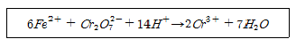
- 3당량
- 4당량
- 5당량
- 6당량
(정답률: 44%)
19. 다음 중 물에 대한 소금의 용해가 물리적 변화라고 할 수 있는 근거로 가장 옳은 것은?
- 소금과 물이 결합한다.
- 용액이 증발하면 소금이 남는다.
- 용액이 증발할 때 다른 물질이 생성된다.
- 소금이 물에 녹으면 보이지 않게 된다.
(정답률: 75%)
20. 표준상태를 기준으로 수소 2.24L 가 염소와 완전히 반응했다면 생성된 염화수소의 부피는 몇 L인가?
- 2.24
- 4.48
- 22.4
- 44.8
(정답률: 71%)
2과목: 화재예방과 소화방법
21. 할로겐화물의 소화약제의 구비조건으로 틀린 것은?
- 전기절연성이 우수할 것
- 공기보다 가벼울 것
- 증발 잔유물이 없을 것
- 인화성이 없을 것
(정답률: 81%)
22. 고정식 포소화설비의 포방출구의 형태 중 고정지붕구조의 위험물탱크에 적합하지 않은 것은?
- 특형
- Ⅱ형
- Ⅲ형
- Ⅳ형
(정답률: 77%)
23. 프로판 2m3 이 완전연소할 때 필요한 이론 공기량은 약 몇 m3 인가? (단, 공기 중 산소농도는 21vol% 이다.)
- 23.81
- 35.72
- 47.62
- 71.43
(정답률: 66%)
24. 물통 또는 수조를 이용한 소화가 공통적으로 적응성이 있는 위험물은 제 몇 류 위험물인가?
- 제2류 위험물
- 제3류 위험물
- 제4류 위험물
- 제5류 위험물
(정답률: 75%)
25. 제1종 분말소화약제가 1차 열분해되어 표준상태를 기준으로 10m3 의 탄산가스가 생성되었다. 몇 kg 의 탄산수소나트륨이 사용되었는가? (단, 나트륨의 원자량은 23 이다.)
- 18.75
- 37
- 56.25
- 75
(정답률: 44%)
26. 대한민국에서 C급 화재에 속하는 것은?
- 일반화재
- 유류화재
- 전기화재
- 금속화재
(정답률: 87%)
27. 화학소방자동차가 갖추어야 하는 소화능력 기준으로 틀린 것은?
- 포수용액 방사능력 : 2000L/min 이상
- 분말 방사능력 : 35kg/s 이상
- 이산화탄소 방사능력 : 40kg/s 이상
- 할로겐화합물 방사능력 : 50kg/s 이상
(정답률: 57%)
28. 분진폭발을 설명한 것으로 옳은 것은?
- 나트륨이나 칼륨 등이 수분을 흡수하면서 폭발하는 현상이다.
- 고체의 미립자가 공기 중에서 착화에너지를 얻어 폭발하는 현상이다.
- 화약류가 산화열의 축적에 의해 폭발하는 현상이다.
- 고압의 가연성가스가 폭발하는 현상이다.
(정답률: 82%)
29. 다음 중 소화약제의 구성성분으로 사용하지 않는 것은?
- 제1인산암모늄
- 탄산수소나트륨
- 황산알루미늄
- 인화알루미늄
(정답률: 56%)
30. 건축물의 외벽이 내화구조로 된 제조소는 연면적 몇 m2 를 1소요 단위로 하는가?
- 50
- 75
- 100
- 150
(정답률: 74%)
31. 이산화탄소를 이용한 질식소화에 있어서 아세톤의 한계산소농도(vol%)에 가장 가까운 것은?
- 15
- 18
- 21
- 25
(정답률: 60%)
32. 올바른 소화기 사용법으로 가장 거리가 먼 것은?
- 적응화재에 사용할 것
- 바람을 등지고 사용할 것
- 방출거리보다 먼 거리에서 사용할 것
- 양옆으로 비로 쓸 듯이 골고루 사용할 것
(정답률: 86%)
33. 과산화나트륨의 화재 시 소화방법으로 다음 중 가장 적당한 것은?
- 포소화약제
- 물
- 마른모래
- 탄산가스
(정답률: 76%)
34. 분말 소화약제 중 제1인산암모늄의 특징이 아닌 것은?
- 백색으로 착색되어 있다.
- 전기화재에 사용할 수 있다.
- 유류화재에 사용할 수 있다.
- 목재화재에 사용할 수 있다.
(정답률: 75%)
35. 제6류 위험물의 소화방법으로 틀린 것은?
- 마른모래로 소화한다.
- 환원성 물질을 사용하여 중화 소화한다.
- 연소의 상황에 따라 분무주수도 효과가 있다.
- 과산화수소 화재 시 다량의 물을 사용하여 희석소화 할 수 있다.
(정답률: 57%)
36. 공기포 발포배율을 측정하기 위해 중량 340g, 용량 1800mL의 포 수집 용기에 가득히 포를 채취하여 측정한 용기의 무게가 540g이었다면 발포배율은? (단, 포 수용액의 비중은 1로 가정한다.)
- 3배
- 5배
- 7배
- 9배
(정답률: 68%)
37. 연소이론에 관한 용어의 정의 중 틀린 것은?
- 발화점은 가연물을 가열할 때 점화원 없이 발화하는 최저의 온도이다.
- 연소점은 5초 이상 연소상태를 유지할 수 있는 최저의 온도이다.
- 인화점은 가연성 증기를 형성하여 점화원이 가해졌을 때 가연성 증기가 연소범위 하한에 도달하는 최저의 온도이다.
- 착화점은 가연물을 가열할 때 점화원 없이 발화하는 최고의 온도이다.
(정답률: 66%)
38. 다음은 제4류 위험물에 해당하는 물품의 소화방법을 설명한 것이다. 소화효과가 가장 떨어지는 것은?
- 산화프로필렌 : 알코올형 포로 질식소화한다.
- 아세트알데히드 : 수성막포를 이용하여 질식소화한다.
- 이황화탄소 : 탱크 또는 용기 내부에서 연소하고 있는 경우에는 물을 유입하여 질식소화한다.
- 디에틸에테르 : 이산화탄소소화설비를 이용하여 질식소화한다.
(정답률: 53%)
39. 물을 소화약제로 사용하는 장점이 아닌 것은?
- 구하기가 쉽다.
- 취급이 간편하다.
- 기화잠열이 크다.
- 피연소 물질에 대한 피해가 없다.
(정답률: 78%)
40. 이동식포소화설비를 옥외에 설치하였을 때 방사량은 몇 L/min 이상으로 30분간 방사할 수 있는 양이어야 하는가?
- 100
- 200
- 300
- 400
(정답률: 56%)
3과목: 위험물의 성질과 취급
41. 다음 중 제1석유류에 해당하는 것은?
- 휘발유
- 등유
- 에틸알코올
- 아닐린
(정답률: 68%)
42. 다음 중 착화온도가 가장 낮은 것은?
- 황린
- 황
- 삼황화인
- 오황화인
(정답률: 68%)
43. 아세톤과 아세트알데히드의 공통 성질에 대한 설명이 아닌 것은?
- 무취이며 휘발성이 강하다.
- 무색의 액체로 인화성이 강하다.
- 증기는 공기보다 무겁다.
- 물보다 가볍다.
(정답률: 57%)
44. 과산화수소의 성질 및 취급방법에 관한 설명 중 틀린 것은?
- 햇빛에 의하여 분해한다.
- 인산, 요산 등의 분해방지 안정제를 넣는다.
- 저장 용기는 공기가 통하지 않게 마개로 꼭 막아둔다.
- 에탄올에 녹는다.
(정답률: 79%)
45. 다음 ( )안에 알맞은 수치는? (단, 인화점이 200℃ 이상인 위험물은 제외한다.)
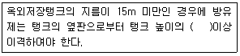
- 1/3
- 1/2
- 1/4
- 2/3
(정답률: 67%)
46. 다음과 같이 위험물을 저장할 경우 각각의 지정수량 배수의 총 합은 얼마인가?
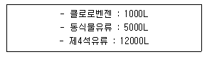
- 2.5
- 3.0
- 3.5
- 4.0
(정답률: 74%)
47. 과산화나트륨의 저장 및 취급방법에 대한 설명 중 틀린 것은?
- 물과 습기의 접촉을 피한다.
- 용기는 수분이 들어가지 않게 밀전 및 밀봉 저장한다.
- 가열 및 충격ㆍ마찰을 피하고 유기물질의 혼입을 막는다.
- 직사광선을 받는 곳이나 습한 곳에 저장한다.
(정답률: 77%)
48. 금속칼륨의 성질에 대한 설명으로 옳은 것은?
- 화학적 활성이 강한 금속이다.
- 산화되기 어려운 금속이다.
- 금속 중에서 가장 단단한 금속이다.
- 금속 중에서 가장 무거운 금속이다.
(정답률: 75%)
49. 다음 위험물 중 혼재가 가능한 위험물은?
- 과염소산칼륨 - 황린
- 질산메틸 - 경유
- 마그네슘 - 알킬알루미늄
- 탄화칼슘 - 니트로글리세린
(정답률: 67%)
50. 지정수량에 따른 제4류 위험물 옥외탱크저장소 주위의 보유공지 너비의 기준으로 틀린 것은?
- 지정수량의 500배 이하 - 3m 이상
- 지정수량의 500배 초과 1000배 이하 - 5m 이상
- 지정수량의 1000배 초과 2000배 이하 - 9m 이상
- 지정수량의 2000배 초과 3000배 이하 - 15m 이상
(정답률: 80%)
51. 다음 화학구조식 중 니트로벤젠의 구조식은?
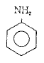
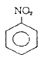
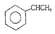
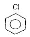
(정답률: 72%)
52. 다음 위험물 중 인화점이 가장 낮은 것은?
- 이황화탄소
- 에테르
- 벤젠
- 아세톤
(정답률: 46%)
53. 알킬알루미늄을 저장하는 이동탱크저장소에 적용하는 기준으로 틀린 것은?
- 탱크는 두께 10mm 이상의 강판 또는 이와 동등 이상의 기계적 성질이 있는 재료로 기밀하게 제작한다.
- 탱크의 저장 용량은 1900L 미만이어야 한다.
- 탱크의 배관 및 밸브 등은 탱크의 아랫부분에 설치하여야 한다.
- 안전장치는 이동저장탱크 수압시험 압력의 3분의 2를 초과하고 5분의 4를 넘지 아니하는 범위의 압력으로 작동하여야 한다.
(정답률: 59%)
54. 트리니트로톨루엔에 관한 설명 중 틀린 것은?
- TNT 라고 한다.
- 피크린산에 비해 충격, 마찰에 둔감하다.
- 물에 녹아 발열ㆍ발화한다.
- 폭발시 다량의 가스를 발생한다.
(정답률: 58%)
55. 다음 중 물과 접촉시켰을 때 위험성이 가장 큰 것은?
- 황
- 중크롬산칼륨
- 질산암모늄
- 알킬알루미늄
(정답률: 69%)
56. 지정수량 이상의 위험물을 차량으로 운반하는 경우 당해 차량에 표지를 설치하여야 한다. 다음 중 직사각형 표지 규격으로 옳은 것은?
- 장변 길이 0.6m 이상, 단변 길이 : 0.3m 이상
- 장변 길이 0.4m 이상, 단변 길이 : 0.3m 이상
- 가로, 세로 모두 0.3m 이상
- 가로, 세로 모두 0.4m 이상
(정답률: 78%)
57. 다음은 위험물의 성질에 대한 설명이다. 각 위험물에 대해 옳은 설명으로만 나열된 것은?
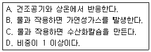
- K : A, B, D
- Ca3P2 : B, C, D
- Na : A, C, D
- CaC2 : A, B, D
(정답률: 67%)
58. 탄화칼슘에서 아세틸렌가스가 발생하는 반응식으로 옳은 것은?
- CaC2 + 2H2O → Ca(OH)2 + C2H2
- CaC2 + H2O → CaO + C2H2
- 2CaC2 + 6H2O → 2Ca(OH)3 + 2C2H3
- CaC2 + 3H2O → CaCO3 + C2H3
(정답률: 58%)
59. 아염소산나트륨이 성상에 관한 설명 중 잘못된 것은?
- 자신은 불연성이다.
- 불안전하여 180℃이상 가열하면 산소를 방출한다.
- 수용액 상태에서도 강력한 환원력을 가지고 있다.
- 티오황산나트륨, 디에틸에테르 등과 혼합하면 폭발한다.
(정답률: 67%)
60. 과산화수소의 운반용기에 외부에 표시해야 하는 주의사항은?
- 물기엄금
- 화기엄금
- 가연물접촉주의
- 충격주의
(정답률: 65%)
고체와 액체, 기체는 각각의 상태에서 특정한 온도와 압력에서 존재합니다. 이때 액체와 기체가 평형에 있을 때의 온도와 액체의 증기압과 외부압력이 같게 되는 온도를 의미하는 것이 끓는점입니다. 반면에 고체와 액체가 평형에 있을 때의 온도와 액체의 증기압과 외부압력이 같게 되는 온도를 의미하는 것이 어는점입니다.
따라서, 끓는점과 어는점은 각각 액체와 고체가 다른 상태로 변화하는 온도를 나타내는 것으로, 끓는점은 액체가 기체로 변화하는 온도를, 어는점은 고체가 액체로 변화하는 온도를 의미합니다.